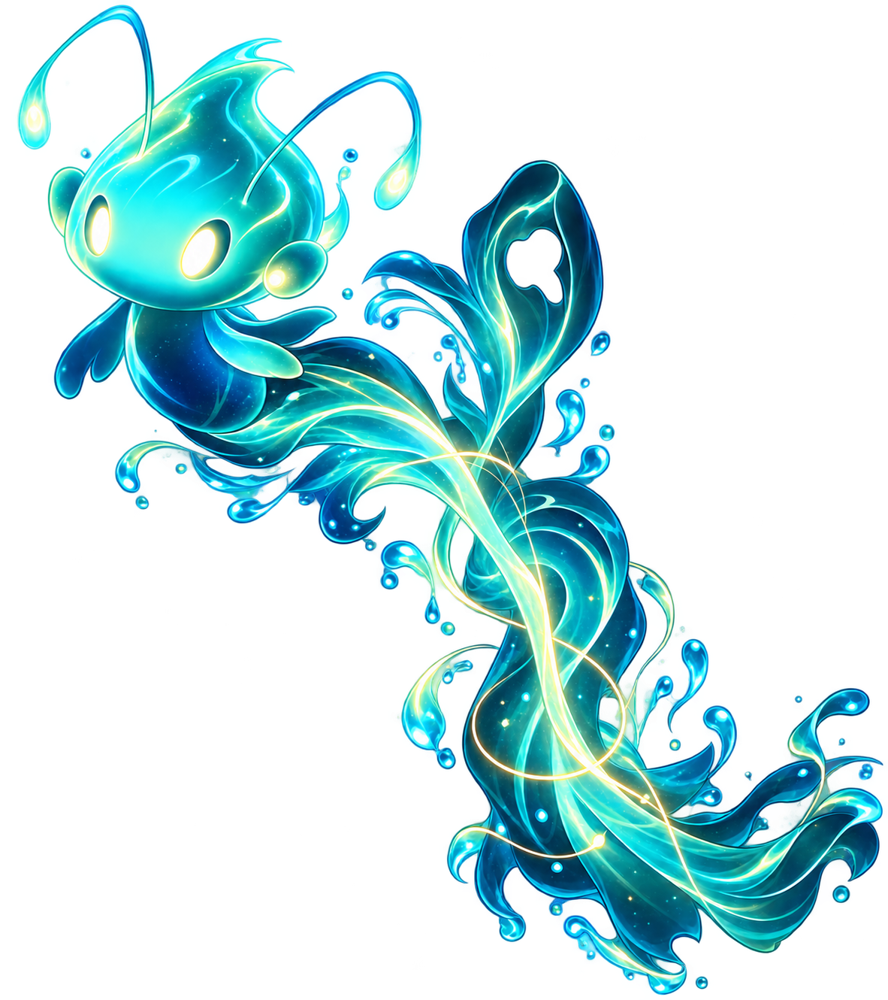

Ask the Studio · Xenwinx

Meet Kajo
Your wisp-spirit guide to Xenwinx Studio. Ask about our work, our worlds, the founder, or how to start a project together.

Your wisp-spirit guide to Xenwinx Studio. Ask about our work, our worlds, the founder, or how to start a project together.